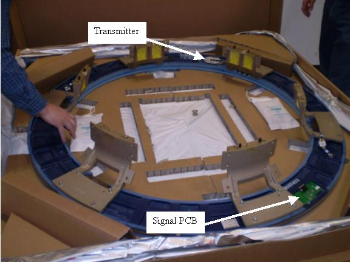

Place top cover of the box on the floor foam side up.
Flip the new Slip Ring over in the box, so that brass rings are face down.
Install the new signal PCB.
Install the new transmitter.
Torque the Signal PCB and Transmitter screws to:
Table 1: Signal PCB and Transmitter Torque
| 1 N-m | NA lb-ft | 9 lb-in | 10 kg-cm |
Illustration 3: Slip Ring components
